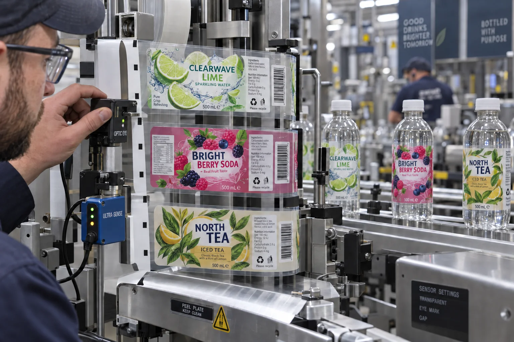

One clear-film SKU runs on the labeler while another feeds inconsistently. The face material and liner are nominally shared, but the artwork crossing the sensing path differs. Approval needs a defined coverage record rather than a pass from the easiest design.
Link the actual sensing path to each relevant artwork and construction in the family. This guide adds a SKU-to-sensor evidence matrix. It does not diagnose an applicator from a photograph or prescribe a sensor setting.

AI-generated illustration retained on this article only. Fictional packaging, equipment and readouts; no depicted date, setting or result is a production recommendation.
Mark the path on the roll drawing
Ask the equipment owner to identify where the sensor reads relative to the web edge and label repeat. Use that location to review the artwork, gap and any registration mark. Keep the drawing revision with the actual sensor model and its approved method.
| Matrix field | What to record for each relevant variant |
|---|---|
| SKU and artwork | Exact file and revision, including white or metallic layers |
| Construction | Face, adhesive, liner and final converted format |
| Detection path | Which physical area passes the sensing point |
| Intended signal | Gap, mark or other feature under the equipment's method |
| Trial identity | Sample roll, machine/station and operating conditions |
| Result and exception | Observed behavior, unresolved issue and approval owner |
Do not populate one SKU's result across every row. Where the equipment owner accepts representative grouping, record the reasoning and its limits. A different white layer, cut shape or liner can make a previous row less representative even when the product belongs to the same brand.
Keep machine data separate from decorative artwork
If an eye mark is used, identify its position, repeat and required appearance under the actual equipment specification. A designer should not move or remove it to clean up a preview. The supplier and line owner need to agree the actual production arrangement; an arbitrary dark rectangle is not a validated correction.
Leuze's official labeling overview distinguishes optical solutions for non-transparent labels and ultrasonic or combined solutions for transparent constructions. These manufacturer examples establish that detection principle matters; they do not select or approve a model for your line.
Treat changes as evidence questions
When a variant changes, compare the sensing-path row before reusing approval. If the change is irrelevant to the detection arrangement, have the responsible line reviewer record that conclusion. If it affects the signal or geometry, identify the additional evidence needed. This avoids both blind release and unnecessary repetition of every previous test.
Use the unwind station record for roll orientation, core/diameter sheet for physical fit and clear-versus-white opacity map for the separate visual decision. Good appearance does not establish machine detection.
Short answer
Confirm what the applicator detects: the physical gap, an eye mark, label opacity or a material change. Then specify the sensor type, minimum gap, mark position, web path and line speed on the roll drawing. Do not assume a standard optical fork sensor will see a clear label on a clear liner.
The buyer sees a transparent label. The machine sees a signal difference measured in milliseconds. Those are not the same job.
Four common detection strategies
| Method | Works by detecting | Main caution |
|---|---|---|
| Optical gap sensor | Light difference between label and liner | Clear-on-clear contrast may be too weak |
| Ultrasonic fork sensor | Material thickness or acoustic change | Must be mounted and taught correctly |
| Contrast / eye-mark sensor | Printed dark mark against the liner | Mark position and repeat must stay controlled |
| Capacitive sensor | Change in dielectric properties | Material and environmental setup matter |
A composite sparkling-water line
This is a composite planning example. A brand moves from white film to clear labels. The first samples apply by hand and look excellent. On the automatic line, the applicator feeds two labels, stops, then advances half a repeat. Everyone blames roll direction.
In this hypothetical example, the artwork crossing the sensing path deserves investigation. A compatible detection arrangement and the final converted roll must be reviewed by the responsible equipment specialist.
Gap size is a machine parameter
The actual sensor and applicator specification control the permitted geometry. A gap stated for another device is not a general production rule. High speed, unusual die shapes, liner noise and old controls can require more space.
A narrow gap also reduces label material waste, which purchasing likes. But saving one millimeter is false economy if it creates intermittent double feeds. Run the actual label shape and construction at production speed before reducing the approved pitch.
When an eye mark is useful
A dark registration mark can give a contrast sensor a consistent trigger when label opacity varies. The mark must repeat at the correct pitch, stay on the sensor side of the web and avoid trimming or splice areas. Its ink should not transfer, smear or interfere with later recycling claims.
Eye marks also need artwork control. If a designer moves the mark to make the PDF look cleaner, the machine may stop seeing the roll. Treat the mark as production data outside the visual design, with a locked layer and dimension.
Sensor-ready roll checklist
- Record sensor manufacturer, model and detection principle.
- Show which side of the web passes through the sensor.
- Specify minimum gap, repeat length and web width.
- Dimension any eye mark from the web edge and label repeat.
- Confirm clear, metallic and heavily printed variants separately.
- Include splice behavior in the line trial.
- Run at production speed and record teach-in settings.
Also confirm label roll direction and leading edge before release.
Send the relevant project details
Send a clear-label machine specification inquiry with the sensor/equipment reference, actual roll drawing, construction, quantities and relevant artwork variants. Mark the detection path and any unresolved observations. The form opens an email draft; use listed email or WhatsApp for files. Equipment selection and commissioning remain with the responsible line specialists.